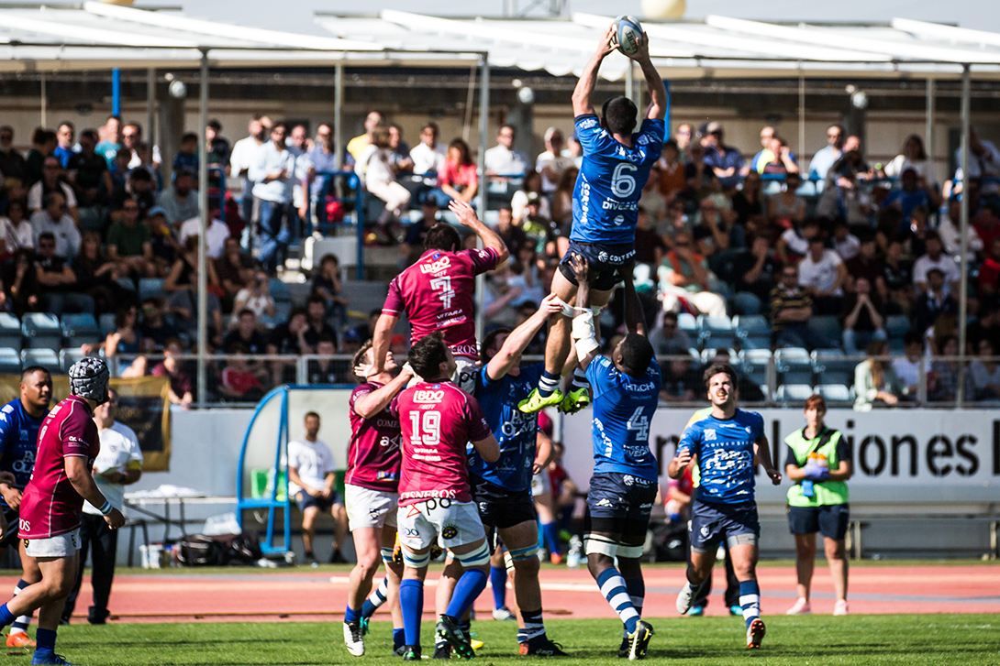

Actualmente el deporte del rugby no está pasando por su mejor momento
Es sabido por todos que la pandemia actual que está afrontando la humanidad no es la situación idónea para practicar este deporte pero los distintos equipos están tratando de encontrar soluciones a esto, tomando todas las medidas necesarias para entrenar y jugar de forma segura.
Uno de los equipos locales más afectados por esta situación ha sido el Ciencias Olavide, el cual a pesar de ser uno de los mejores y más famosos equipos,
se ha visto obligado a retrasar algunos de sus partidos debido a que algunos de los jugadores eran casos positivos del virus.
Finalmente, el club ha confirmado la recuperación completa de sus jugadores y ha confirmado las fechas de los siguientes partidos, lo que ha alegrado mucho a los fans del rugby sevillano.

Por otra parte, en países como escocia, siguen disfrutando del deporte sin ningún problema, pues a pesar de las adversidades, se ha disputado el torneo de las seis naciones con relativa normalidad hace poco, conluyendo con la victoria de Inglaterra, pero habiéndonos dejado unos grandes partidos aunque la bajada del público de forma física se ha notado en las recaudaciones del evento.